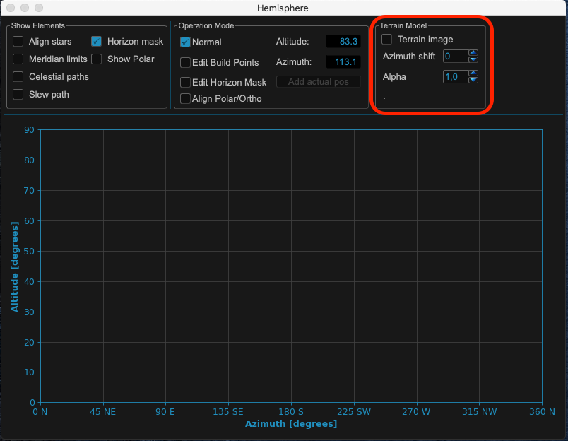

Terrain image & horizon mask¶
For an optimal use of model points, slew path etc. it is necessary to define a horizon mask for the use in MountWizzard4. There are several way to define and use a mask based on your actual environment
Hint
See also on youtube: https://youtu.be/EqDNNMNMS0w
Using terrain image from Teleport: 360 app¶
Please use Teleport: 360 app to generate a 360 degrees image around your mount rig. You can save as a .jpeg then rename it to terrain.jpg. I then had to adjust the azimuth paying attention to high points using compass readings.
{kind=link}
If you finished the image and transferred it to you computer it might look like:
{kind=link}
Please put this image to you config dir in your MountWizzard4 working folder. The file format output from streetview is 4096 X 2048 pixel color as JPG. The horizon for altitude 0 degree cuts the image in an upper and lower half. MountWizzard4 uses only the upper half of the image as it expects the image to be taken at the height of the horizon line.
Note
The image file has to be named to: terrain.jpg and should be in JPG format.
MountWizzard4 will use the image as greyscale image. You could play around how you prepare the image before you copy it to the config directory. Good ideas of improving the image are: make the sky transparent, equalize gamma / lightness settings to avoid highlights in the image, etc. Once you open the hemisphere window you see the setups for the terrain background.
{kind=link}
After use terrain is checked and a terrain.jpg image is available in config directory, the image will be shown as background of hemisphere.
{kind=link}
The image will also show up in polar diagram!
{kind=link}
Two adjustments could be changed to make the image fit for use: Most important the azimuth adjustment.
You shift the image by a number of degrees (0 - 359) to get your image fit to the cardinal points of the hemisphere.
You could change the alpha channel of the image to get a nice view on your screen.
Then you could add the horizon mask quite easily:
{kind=link}
Note
The horizon line (altitude = 0) is set within streetview. Please try to shoot the image at the height of your mount to make it fit. Still there might be some deviations from “real life”.
Warning
All calculations which respect a horizon mask reference to a given mask not the image itself. So even if you have an image set, you need to define horizon mask points!